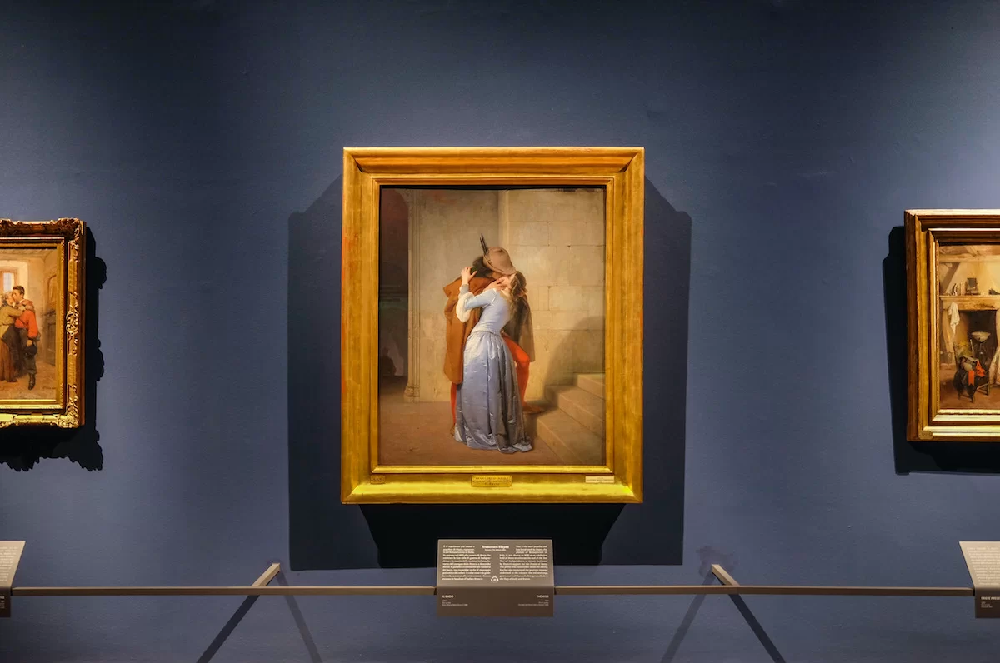

L'Intimità Romantica e il Valore Allegorico
Ne Il Bacio (dipinto nel 1859 da Francesco Hayez e conservato alla Pinacoteca di Brera a Milano), la luce si consolida come lo strumento espressivo fondamentale per coniugare l'intimità del sentimento romantico con il profondo valore allegorico del Risorgimento italiano. Realizzata alla vigilia della Seconda Guerra d'Indipendenza, l'opera svela come la luce pittorica possa farsi vettore di passione emotiva e al contempo di propaganda politica risorgimentale.

Il Chiaroscuro Drammatico e la Resa dei Tessuti
La scena è ambientata all'interno di un'architettura medievale essenziale, dominata da mura in pietra grigia che creano uno sfondo scuro e privo di elementi decorativi di disturbo. Da sinistra, una fonte luminosa radente investe l'abbraccio dei due giovani amanti, lasciando nell'ombra i gradini sulla destra, dove si intravede la figura indistinta di una domestica o di una guardia, per concentrare l'intera forza visiva sul contatto dei protagonisti. Questa scelta illuminotecnica valorizza la straordinaria maestria di Hayez nella resa dei materiali e dei tessuti: la luce sulla veste in seta azzurra della donna crea riflessi lucidi e cangianti che ne evidenziano le pieghe morbide, mentre si fonde con i toni caldi del mantello marrone e della calzamaglia rossa del giovane.

Simbolismo Politico e Patriottismo
Attraverso questo sofisticato gioco di riflessi e contrasti cromatici, la luce non si limita a plasmare i corpi in un abbraccio travolgente e furtivo, ma accende le valenze simboliche dell'opera. Il contrasto tra l'azzurro della veste femminile e il rosso della calzatura del giovane evoca l'alleanza tra la Francia (il tricolore francese) e l'Italia nella lotta contro il dominio austriaco. In questo modo, l'illuminazione di Hayez trasforma un fugace momento sentimentale in un'icona del Romanticismo italiano, in cui la luce riscalda la passione dei due amanti e risveglia la speranza e il patriottismo dell'intera nazione.